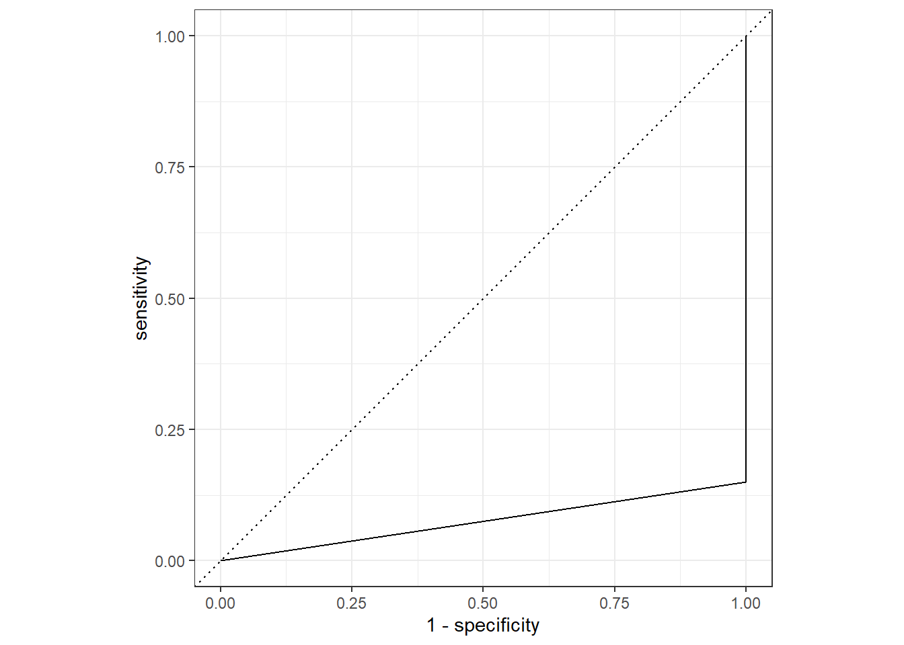
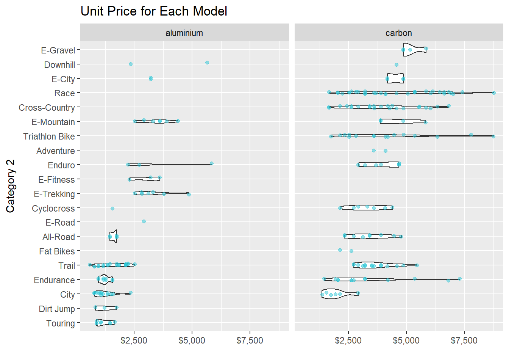
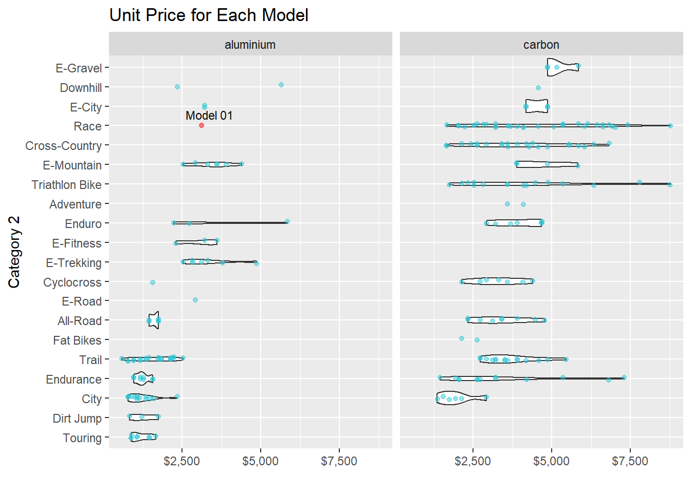

02 Supervised ML
2020-11-05
1 02 Supervised ML
############ Supervised ML # 2 #####################
library(tidymodels)
library(rstanarm)
library(broom.mixed)
library(xgboost)
library(tidyverse)
library(parsnip)
library(recipes)
library(rsample)
library(yardstick)
library(rpart.plot)
library(modeldata)
# Data exploration
bike_data_tbl <- readRDS("raw_data/bike_orderlines.rds")
model_sales_tbl <- bike_data_tbl %>%
select(total_price, model, category_2, frame_material) %>%
group_by(model, category_2, frame_material) %>%
summarise(total_sales = sum(total_price)) %>%
ungroup() %>%
arrange(desc(total_sales))
model_sales_tbl %>%
mutate(category_2 = as_factor(category_2) %>%
fct_reorder(total_sales, .fun = max) %>%
fct_rev()) %>%
ggplot(aes(frame_material, total_sales)) +
geom_violin() +
geom_jitter(width = 0.1, alpha = 0.5, color = "#2c3e50") +
#coord_flip() +
facet_wrap(~ category_2) +
scale_y_continuous(labels = scales::dollar_format(scale = 1e-6, suffix = "M", accuracy = 0.1)) +
tidyquant::theme_tq() +
labs(
title = "Total Sales for Each Model",
x = "Frame Material", y = "Revenue"
)
bike_features_tbl <- readRDS("bike_features_tbl.rds")
bike_features_tbl <- bike_features_tbl %>%
select(frame_material:gender, `Rear Derailleur`, `Shift Lever`) %>%
mutate(
`shimano dura-ace` = `Rear Derailleur` %>% str_to_lower() %>% str_detect("shimano dura-ace ") %>% as.numeric(),
`shimano ultegra` = `Rear Derailleur` %>% str_to_lower() %>% str_detect("shimano ultegra ") %>% as.numeric(),
`shimano 105` = `Rear Derailleur` %>% str_to_lower() %>% str_detect("shimano 105 ") %>% as.numeric(),
`shimano tiagra` = `Rear Derailleur` %>% str_to_lower() %>% str_detect("shimano tiagra ") %>% as.numeric(),
`Shimano sora` = `Rear Derailleur` %>% str_to_lower() %>% str_detect("shimano sora") %>% as.numeric(),
`shimano deore` = `Rear Derailleur` %>% str_to_lower() %>% str_detect("shimano deore(?! xt)") %>% as.numeric(),
`shimano slx` = `Rear Derailleur` %>% str_to_lower() %>% str_detect("shimano slx") %>% as.numeric(),
`shimano grx` = `Rear Derailleur` %>% str_to_lower() %>% str_detect("shimano grx") %>% as.numeric(),
`Shimano xt` = `Rear Derailleur` %>% str_to_lower() %>% str_detect("shimano deore xt |shimano xt ") %>% as.numeric(),
`Shimano xtr` = `Rear Derailleur` %>% str_to_lower() %>% str_detect("shimano xtr") %>% as.numeric(),
`Shimano saint` = `Rear Derailleur` %>% str_to_lower() %>% str_detect("shimano saint") %>% as.numeric(),
`SRAM red` = `Rear Derailleur` %>% str_to_lower() %>% str_detect("sram red") %>% as.numeric(),
`SRAM force` = `Rear Derailleur` %>% str_to_lower() %>% str_detect("sram force") %>% as.numeric(),
`SRAM rival` = `Rear Derailleur` %>% str_to_lower() %>% str_detect("sram rival") %>% as.numeric(),
`SRAM apex` = `Rear Derailleur` %>% str_to_lower() %>% str_detect("sram apex") %>% as.numeric(),
`SRAM xx1` = `Rear Derailleur` %>% str_to_lower() %>% str_detect("sram xx1") %>% as.numeric(),
`SRAM x01` = `Rear Derailleur` %>% str_to_lower() %>% str_detect("sram x01|sram xo1") %>% as.numeric(),
`SRAM gx` = `Rear Derailleur` %>% str_to_lower() %>% str_detect("sram gx") %>% as.numeric(),
`SRAM nx` = `Rear Derailleur` %>% str_to_lower() %>% str_detect("sram nx") %>% as.numeric(),
`SRAM sx` = `Rear Derailleur` %>% str_to_lower() %>% str_detect("sram sx") %>% as.numeric(),
`SRAM sx` = `Rear Derailleur` %>% str_to_lower() %>% str_detect("sram sx") %>% as.numeric(),
`Campagnolo potenza` = `Rear Derailleur` %>% str_to_lower() %>% str_detect("campagnolo potenza") %>% as.numeric(),
`Campagnolo super record` = `Rear Derailleur` %>% str_to_lower() %>% str_detect("campagnolo super record") %>% as.numeric(),
`shimano nexus` = `Shift Lever` %>% str_to_lower() %>% str_detect("shimano nexus") %>% as.numeric(),
`shimano alfine` = `Shift Lever` %>% str_to_lower() %>% str_detect("shimano alfine") %>% as.numeric()
) %>%
select(-c(`Rear Derailleur`, `Shift Lever`)) %>%
mutate_if(is.numeric, ~replace(., is.na(.), 0))
bike_features_tbl <- bike_features_tbl %>%
mutate(id = row_number()) %>%
mutate(frame_material = factor(frame_material)) %>%
select(id, everything())
bike_features_tbl %>% distinct(category_2)split_obj <- rsample::initial_split(bike_features_tbl, prop = 0.80,
strata = "category_2")
split_obj %>% training() %>% distinct(category_2)split_obj %>% testing() %>% distinct(category_2)train_tbl <- training(split_obj)
test_tbl <- testing(split_obj)
train_data <- train_tbl %>% set_names(str_replace_all(names(train_tbl), " |-", "_"))
test_data <- test_tbl %>% set_names(str_replace_all(names(test_tbl), " |-", "_"))
# recipe
bike_rec <-
recipe(frame_material ~ ., data = train_data) %>%
step_dummy(all_nominal(), -all_outcomes()) %>%
step_zv(all_predictors())
d <- summary(bike_rec)
lr_mod <-
logistic_reg() %>%
set_engine("glm")
lr_mod## Logistic Regression Model Specification (classification)
##
## Computational engine: glmbike_wflow <-
workflow() %>%
add_model(lr_mod) %>%
add_recipe(bike_rec)
bike_wflow## == Workflow ====================================================================
## Preprocessor: Recipe
## Model: logistic_reg()
##
## -- Preprocessor ----------------------------------------------------------------
## 2 Recipe Steps
##
## * step_dummy()
## * step_zv()
##
## -- Model -----------------------------------------------------------------------
## Logistic Regression Model Specification (classification)
##
## Computational engine: glmbike_fit <-
bike_wflow %>%
fit(data = train_data)
bike_fit## == Workflow [trained] ==========================================================
## Preprocessor: Recipe
## Model: logistic_reg()
##
## -- Preprocessor ----------------------------------------------------------------
## 2 Recipe Steps
##
## * step_dummy()
## * step_zv()
##
## -- Model -----------------------------------------------------------------------
##
## Call: stats::glm(formula = ..y ~ ., family = stats::binomial, data = data)
##
## Coefficients:
## (Intercept) id
## -216.42088 1.75273
## weight price
## -18.43541 0.07067
## shimano_dura_ace shimano_ultegra
## -45.18521 -8.29724
## shimano_105 shimano_tiagra
## 30.10747 46.53860
## shimano_deore shimano_slx
## 60.96533 -10.13684
## shimano_grx Shimano_xt
## 0.69482 37.71326
## Shimano_saint SRAM_red
## 78.91855 -243.41064
## SRAM_force SRAM_rival
## -102.45890 -30.10341
## SRAM_apex SRAM_xx1
## -34.68779 -115.26454
## SRAM_x01 SRAM_gx
## -73.88395 4.01396
## SRAM_nx SRAM_sx
## 74.15865 35.13687
## Campagnolo_potenza Campagnolo_super_record
## -54.47682 -339.65136
## shimano_nexus shimano_alfine
## -9.74430 -58.80169
## category_1_Gravel category_1_Hybrid...City
## -9.92656 -87.26521
## category_1_Mountain category_1_Road
## -3.02818 130.55834
## category_2_All.Road category_2_City
## 150.40898 -46.92565
## category_2_Cross.Country category_2_Cyclocross
## 15.88376 60.86552
## category_2_Dirt.Jump category_2_Downhill
## -23.16033 -135.09342
## category_2_E.City category_2_E.Fitness
## -20.01005 -163.65359
## category_2_E.Gravel category_2_E.Mountain
## 29.43673 69.13575
## category_2_E.Trekking category_2_Endurance
## NA 52.96671
## category_2_Enduro category_2_Fat.Bikes
## -60.39367 149.89161
## category_2_Race category_2_Touring
## 15.66707 NA
##
## ...
## and 34 more lines.bike_fit %>%
pull_workflow_fit() %>%
tidy()bike_pred <-
predict(bike_fit, test_data, type="prob") %>%
bind_cols(test_data %>% select(frame_material, category_2))
bike_pred %>%
roc_curve(truth = frame_material, .pred_aluminium) %>%
autoplot()
bike_pred %>%
roc_curve(truth = frame_material, .pred_carbon) %>%
autoplot()
bike_predroc_al <- bike_pred %>%
roc_auc(truth = frame_material, .pred_aluminium)
roc_alroc_car <- bike_pred %>%
roc_auc(truth = frame_material, .pred_carbon)
roc_car# Evaluation
model_01_linear_lm_simple <- linear_reg(mode = "regression") %>%
set_engine("lm") %>%
fit(price ~ category_2 + frame_material, data = train_data)
model_01_linear_lm_simple## parsnip model object
##
## Fit time: 0ms
##
## Call:
## stats::lm(formula = price ~ category_2 + frame_material, data = data)
##
## Coefficients:
## (Intercept) category_2All-Road category_2City
## 2174.1 -562.3 -1283.8
## category_2Cross-Country category_2Cyclocross category_2Dirt Jump
## 176.3 -543.8 -908.5
## category_2Downhill category_2E-City category_2E-Fitness
## 2104.9 805.0 868.2
## category_2E-Gravel category_2E-Mountain category_2E-Trekking
## 1345.0 1279.9 1073.2
## category_2Endurance category_2Enduro category_2Fat Bikes
## -417.5 178.7 -1215.0
## category_2Race category_2Touring category_2Trail
## 947.5 -1131.8 -350.8
## category_2Triathlon Bike frame_materialcarbon
## 456.5 1669.9test_data <- test_data %>% filter(category_2 != "Fat Bikes")
yards <- model_01_linear_lm_simple
yards## parsnip model object
##
## Fit time: 0ms
##
## Call:
## stats::lm(formula = price ~ category_2 + frame_material, data = data)
##
## Coefficients:
## (Intercept) category_2All-Road category_2City
## 2174.1 -562.3 -1283.8
## category_2Cross-Country category_2Cyclocross category_2Dirt Jump
## 176.3 -543.8 -908.5
## category_2Downhill category_2E-City category_2E-Fitness
## 2104.9 805.0 868.2
## category_2E-Gravel category_2E-Mountain category_2E-Trekking
## 1345.0 1279.9 1073.2
## category_2Endurance category_2Enduro category_2Fat Bikes
## -417.5 178.7 -1215.0
## category_2Race category_2Touring category_2Trail
## 947.5 -1131.8 -350.8
## category_2Triathlon Bike frame_materialcarbon
## 456.5 1669.9g1 <- bike_features_tbl %>%
mutate(category_2 = as.factor(category_2) %>%
fct_reorder(price)) %>%
ggplot(aes(category_2, price)) +
geom_violin() +
geom_jitter(width = 0.1, alpha = 0.5, color = "#2dc6d6") +
coord_flip() +
facet_wrap(~ frame_material) +
scale_y_continuous(labels = scales::dollar_format()) +
labs(
title = "Unit Price for Each Model",
y = "", x = "Category 2"
)
g1
new_race_alu <- tibble(
model = "Exceed AL SL new",
category_2 = "Race",
frame_material = "aluminium",
shimano_dura_ace = 0,
shimano_ultegra = 0,
shimano_105 = 0,
shimano_tiagra = 0,
Shimano_sora = 0,
shimano_deore = 0,
shimano_slx = 0,
shimano_grx = 0,
Shimano_xt = 1,
Shimano_xtr = 0,
Shimano_saint = 0,
SRAM_red = 0,
SRAM_force = 0,
SRAM_rival = 0,
SRAM_apex = 0,
SRAM_xx1 = 0,
SRAM_x01 = 0,
SRAM_gx = 0,
SRAM_nx = 0,
SRAM_sx = 0,
Campagnolo_potenza = 0,
Campagnolo_super_record = 0,
shimano_nexus = 0,
shimano_alfine = 0
)
new_race_alupredict(model_01_linear_lm_simple, new_data = new_race_alu)models_tbl <- tibble(
model_id = str_c("Model 0", 1:1),
model = list(
model_01_linear_lm_simple
)
)
models_tblpredictions_new_race_alu_tbl <- models_tbl %>%
mutate(predictions = map(model, predict, new_data = new_race_alu)) %>%
unnest(predictions) %>%
mutate(category_2 = "Race") %>%
left_join(new_race_alu, by = "category_2")
predictions_new_race_alu_tblg2 <- g1 +
geom_point(aes(y = .pred), color = "red", alpha = 0.5,
data = predictions_new_race_alu_tbl) +
ggrepel::geom_text_repel(aes(label = model_id, y = .pred),
size = 3,
data = predictions_new_race_alu_tbl)
g2